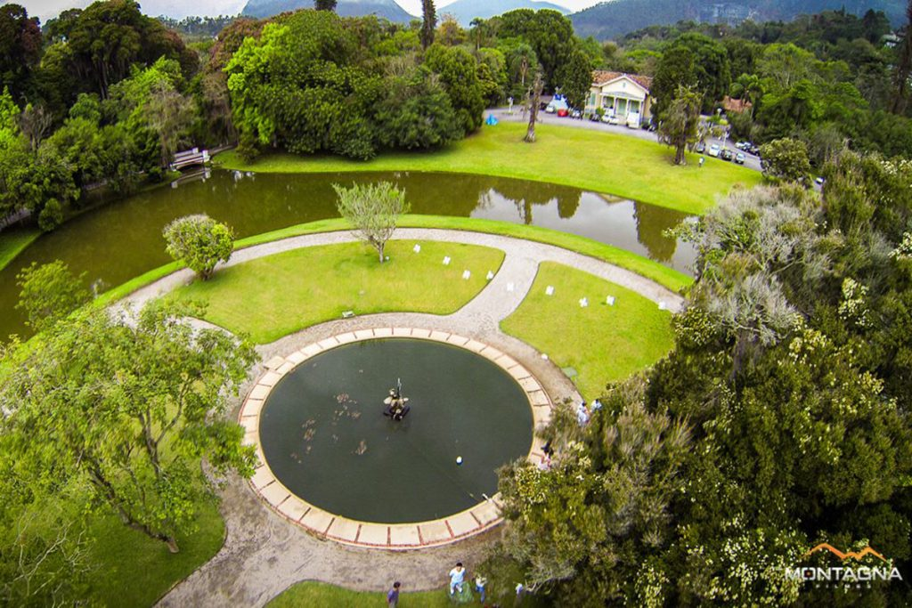
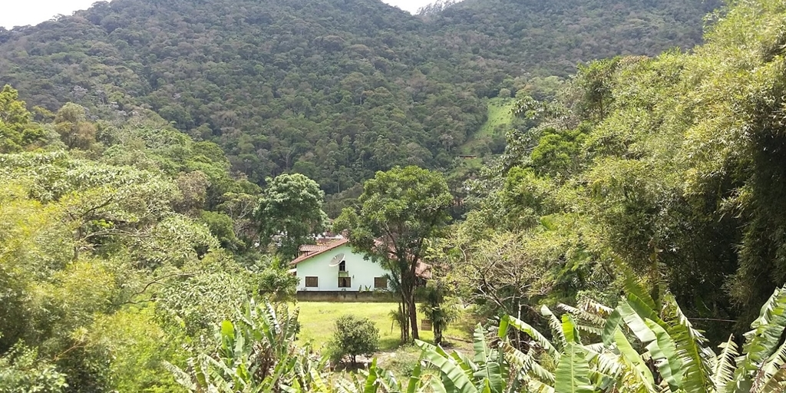
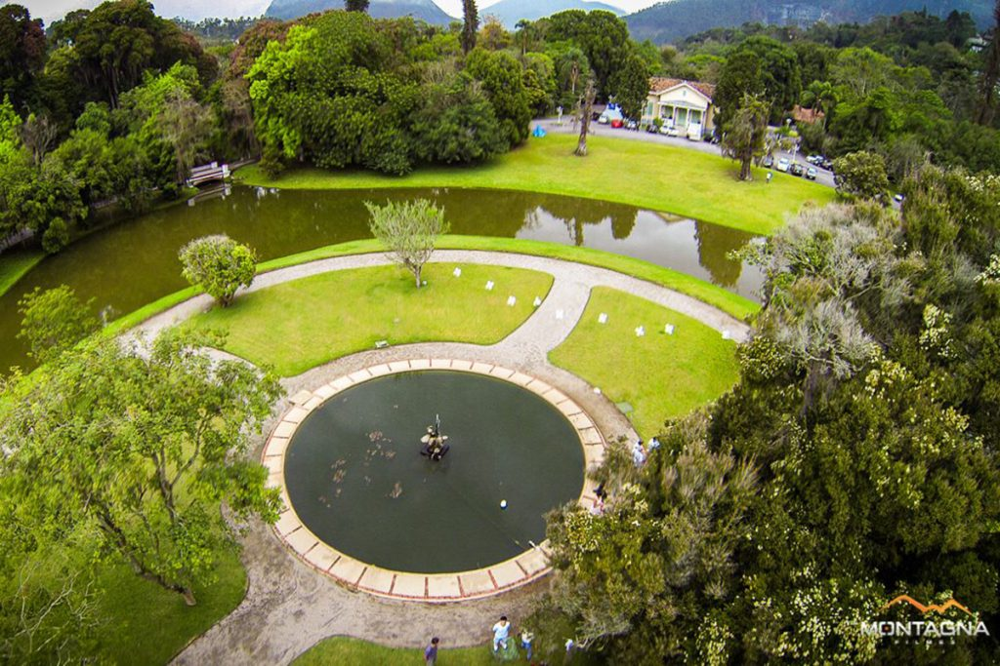
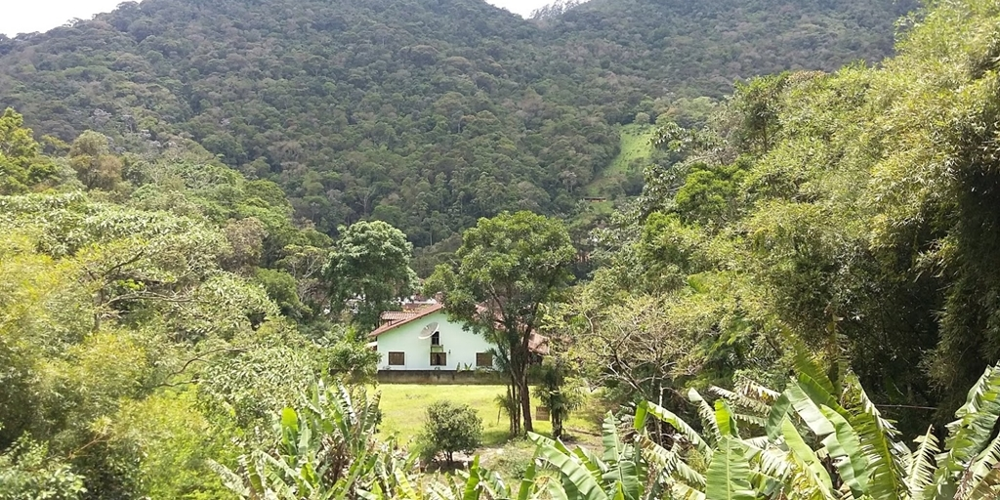

BASQUETE
O basquetebol, ou simplesmente basquete, é um esporte coletivo praticado entre duas equipes. Ele é jogado com uma bola, onde o objetivo é inseri-la no cesto fixo que está localizado nas extremidades da quadra.
ACADEMIA
O treinamento de força, mais conhecido como Musculação é um tipo de treino físico de força realizado com ajuda de pesos externos, com objetivo de aumentar a hipertrofia muscular, ganho de força e potência.
DANÇA
Uma Escola que transforma vidas através da Dança. Amizade, companherismo, foco e muito amor pelo o que se faz.
Sobre
O Nova Friburgo Country Clube é um dos lugares mais belos e tradicionais do país. Nossa história remonta há mais de 150 anos, em 1862, quando o Barão de Nova Friburgo decidiu construir uma residência de campo para a família. A casa, em arquitetura de chalé, projeto do arquiteto alemão Gustave Waehneldt, foi rodeada por jardins do paisagista francês Auguste Glaziou, dando forma à Chácara do Chalet

Gilson S, RJ
Um espaço de privilegiada natureza no coração de Nova Friburgo. Extremamente bem cuidado e de muito bom gosto oferece relaxamento e beleza com o seu lindo bambuzal de entrada, lagoa e pequenas pontes que adornam o ambiente emolduradas por belas árvores e alguns animais, Gratuito, embora seja de caráter privado!. Show de bola!